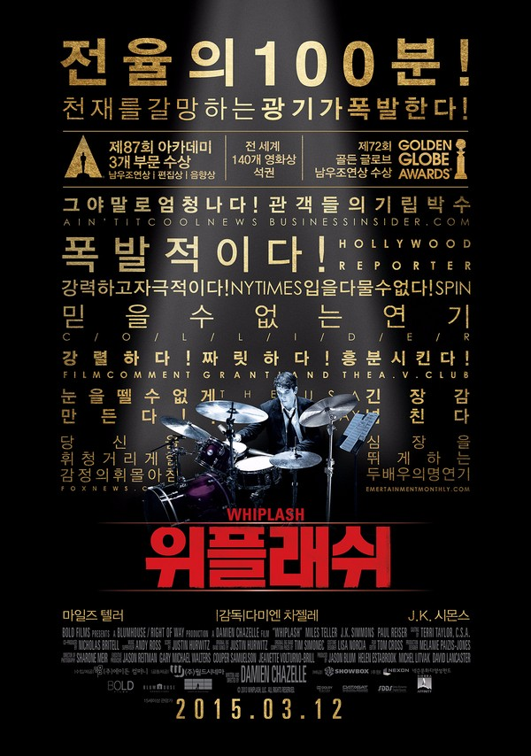
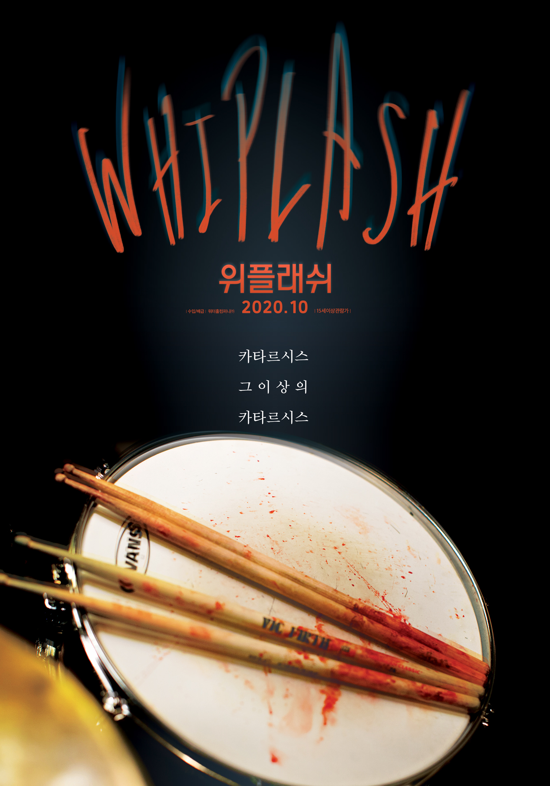

WHIPLASH (2014)
<줄거리> 뉴욕의 명문 셰이퍼 음악학교에서 최고의 스튜디오 밴드에 들어가게 된 신입생 '앤드류' 최고의 지휘자이지만 동시에 최악의 폭군인 '플레쳐'교수는 폭언과 학대로 '앤드류'를 한계까지 몰아붙이고 또 몰아붙인다. 드럼 주위로 뚝뚝 떨어지는 피, 빠르게 달리는 선율 뒤로 아득해지는 의식, 그 순간, 드럼에 대한 앤드류의 집착과 광기가 폭발한다. 최고의 연주를 위한 완벽한 스윙이 시작된다!



마일즈 텔러(Miles Teller)
: 이 영화를 보는 사람들에게 동기를 가장 많이 부여해주는 인물로 극중 주인공이다. 드럼을 배우는 학생이고 플레쳐 교수님에게 수업을 받기위해 노력하며 끝내 인정받는 인물이다. 극안에서 플레쳐와 갈등을 주고받는 인물이다. 그 갈등이 꿀잼
플레쳐 (J.K.Simons)
: 가장 인상깊게 보았던 연기를 맡으신 배우이다. 이 분을 우리는 스파이더맨 에서 이미 보았다. 신문사 국장님으로 출연하는데 위플래쉬에서 오로지 연기로만 관객을 몰입하게 만드는 정말 베테랑 배우이다. 주인공 앤드류의 교수로 연기를 맡았다.